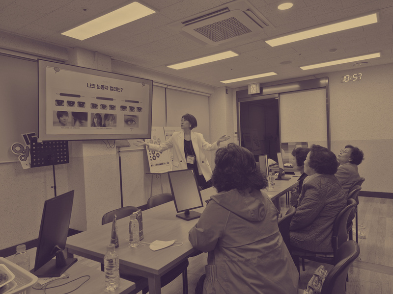
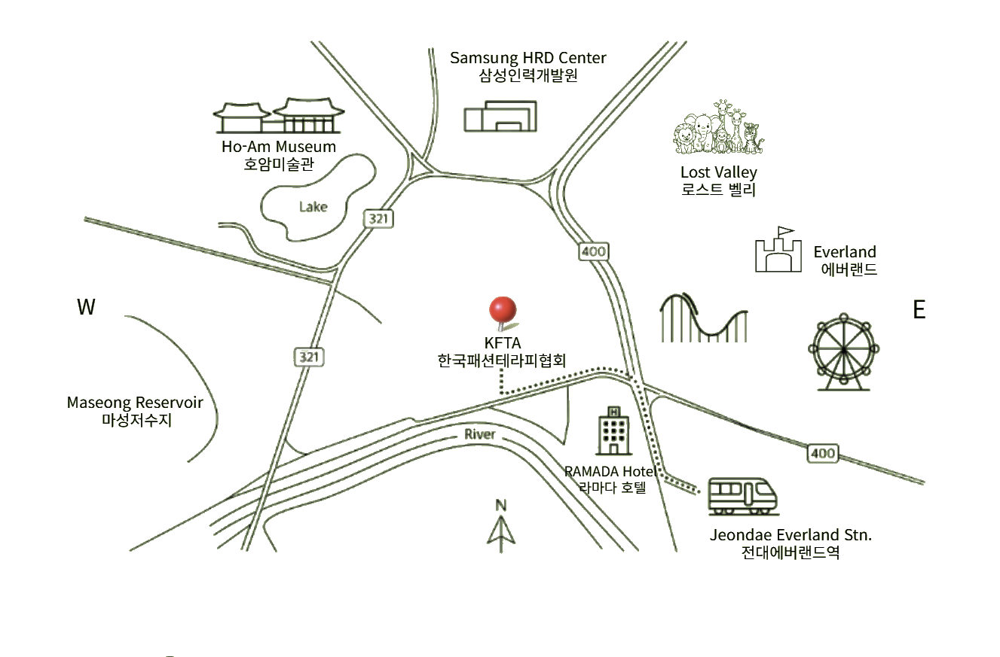

Our Story
심리적 통찰, 자기 성찰, 그리고 진정성으로 완성되는 패션 테라피를 통해 당신을 발견하세요.

심리적 통찰, 자기 성찰, 그리고 진정성으로 완성되는 패션 테라피를 통해 당신을 발견하세요.
한국패션테라피협회장 인사말

Pioneering Fashion Therapy
2012년 국내 최초 학술 연구 개척 이래 교육 및 임상 실무를 선도해 온 전문 현장
주관적 감각을 넘어선 객관적 분석, 유행이 아닌 내면의 진정성으로 당신만의 고유한 스타일을 꽃피웁니다.
안녕하십니까, 한국패션테라피협회장 남미화입니다.
저희 협회를 찾아주신 모든 분들께 진심으로 깊은 감사의 인사를 드립니다.
본 협회는 2012년 국내 최초의 패션테라피 학술 연구에서 출발하여, 의류학, 심리학, 표현예술(미술심리)의 학문적 통찰을 융합함으로써 옷차림 속에 깃든 개인의 고유한 정서와 심리를 과학적으로 읽어내는 전문 기관입니다.
저희는 주관적인 감각이나 일시적인 유행에 기대지 않습니다. 15년 이상 축적된 수천 건의 임상 상담 사례와 독자적인 ‘이미지스타일분석™ 7요소 · 4축 프레임워크’를 기반으로 누구에게나 적용 가능한 객관적인 기준을 제시합니다.
나이와 환경에 흔들리지 않고, 온전히 자기 자신을 긍정하며 일상 속에서 당당한 아름다움을 주도적으로 꽃피워 나가실 수 있도록 협회가 든든한 동반자가 되어 드리겠습니다.
진심을 담아 응원합니다. 감사합니다.
2012년 국내 최초 학술 연구 발표 및 의류학·심리학 융합 이론 정립
자체 특허 및 임상 기반 페이스보드, 바디카드, 드레이프 시스템
자격기본법 준수 등록 자격 및 공공기관·기업 공식 출강 네트워크
국내 최초 패션테라피 학술 연구를 개척하고, 의류학·심리학·미술심리를 융합하여
체계적인 표준을 정립해 온 협회장의 전문 이력입니다.
「힐링 콘텐츠 개념을 적용한 패션테라피 연구의 방법론적 접근」
한국패션비즈니스학회 학술대회 발표 (남미화·박혜원) · 국내 패션테라피 연구의 효시
Academic Degrees
의류학과 패션전공 이학박사
Fashion and Textiles 석사 (M.A.)
의류직물학과 의류직물학전공 석사
Societies & Activities
추계학술대회 우수논문상 수상 및 구두 발표 (2013)
다수의 패션 조형 전시 활동 참여
학술 및 색채 전시 활동 참여
내면 심리 및 감성 코칭
컬러 테라피 & 에너지 분석
외적 스타일링 및 리테일 실무
전 영남대학교 의류패션학과 겸임교수 · 국립창원대 · 국립경상대(의류학과) · 국립금오공과대(소재디자인공학과) · 세종사이버대(상담심리학부) · 청강문화산업대 패션스쿨 등 대학 강사 역임
현 캄온(calm:on) 대표 · 전 패션이즈 대표 (패션 유통 및 디자인 총괄) · 전 한국종합교육원 · 이천평생학습관 강사 역임
후학 양성과 패션 산업 실무를 아우르는 풍부한 현장 지도 경험
객관적인 공적 심사 역량과 특화 콘텐츠 저술 실적 보유
협회 철학 & 비전
한국패션테라피협회(KFTA)는 2012년 한국패션비즈니스학회에서 발표한 「힐링 콘텐츠 개념을 적용한 패션 테라피 연구의 방법론적 접근」(남미화·박혜원)에서 시작된 국내 패션테라피 연구의 계보 위에 서 있습니다.
2021년 한국패션테라피진흥원을 세워 그 연구를 이어왔고, 축적된 성과를 교육 과정으로 옮겨왔습니다.
의류학·심리학·미술심리의 융합적 통찰을 바탕으로, 감각이 아닌 '분석 기준'으로 스타일링을 설명하는 7요소 · 4축, 그리고 매체론을 정립해왔습니다.
이 기준 위에서 전문가를 양성하고, 검증된 시스템을 해외로 확장해 나갑니다.
“감이 아닌 분석으로 옷차림 너머의 마음을 읽는다.”
이미지스타일분석™을 통해 누구나 자신의 스타일을 스스로 완성해 나가도록 돕습니다.
협회 5대 핵심 가치
관계, 자기사랑, 호기심, 타인존중, 성장의 5대 축을 통해
내면의 빛을 발견하고 진정한 자기다움을 꽃피웁니다.
세상과의 따뜻한 연결
나를 긍정하는 자존감
새로운 스타일에 대한 탐색
서로 다른 개성의 포용
주도적 변화와 실천
협회 고유 분석 방법론
IMAGE STYLE ANALYSIS™은
한국패션테라피협회만의 고유 프레임워크입니다.
단순한 외모 연출을 넘어 개인의 심리 기질, 체형 실루엣, 행동 패턴, 라이프스타일을 4가지 핵심 축으로 융합 분석하여 나이와 유행에 흔들리지 않는 본연의 자기 스타일을 정립합니다.
교육과정 둘러보기패션 · 퍼스널컬러
체형 · 페이스 라인
헤어 · 메이크업 조형미
내면 심리 · 정서 상태
무의식 속 선호와 갈망
자존감 · 자기표현 욕구
자세 · 걸음걸이
표정 · 아이 콘택트
보이스 · 커뮤니케이션 매너
T.P.O 상황 적합성
사회적 역할 · 관계성
라이프스타일 · 웰에이징
학술 연구와 협회 연혁
2012년 국내 최초의 패션테라피 학술 연구에서 출발하여,
체계적인 교육 및 라이프스타일 브랜드로 도약해 온 발자취입니다.
KFTA 맞춤형 교육 시스템 & 중앙 연구 스튜디오
한국패션테라피협회는 학습자의 교육 환경과 목적에 최적화된 가장 안전하고 깊이 있는 교육 시스템을 운영합니다.
시공간 제약 없는 온라인 클래스부터 기관 맞춤 출강, 전문 세미나룸, 프라이빗 1:1 연구 세션까지 체계적으로 만나보실 수 있습니다.
전국 및 해외 어디서나 시공간 제약 없이 수강할 수 있는 온라인 과정입니다. 고화질 실시간 강의와 다시보기 VOD, 공식 연구 교재 및 실습 교구재가 함께 제공됩니다.
대학교, 공공기관, 기업체 인재개발원 등 현장으로 전문 강사진이 직접 찾아가는 맞춤형 위탁 교육입니다. 대상자의 직무와 연령에 최적화된 테라피 워크숍을 진행합니다.
정규 심화 과정 및 대규모 학술 워크숍은 쾌적하고 공인된 전문 세미나홀과 컨벤션룸을 대관하여 안전하고 품격 있는 환경에서 실습과 교류를 진행합니다.
KFTA 중앙 연구 스튜디오에서 오직 한 분만을 위해 온전히 집중하는 1:1 맞춤형 세션입니다. 100% 사전 예약제로 운영되어 프라이빗하고 깊이 있는 분석과 자문을 제공합니다.

한국패션테라피협회 중앙 연구 스튜디오 방문 및 사전 예약 안내
KFTA 중앙 연구 스튜디오는 학술 연구와 교구재 개발, 그리고 1:1 심층 자문에만 집중하는 프라이빗 연구 공간입니다. 방문하시는 분들의 프라이버시와 심도 있는 세션을 위해 100% 사전 예약 확정제로만 운영됩니다.
경기도 용인시 처인구 포곡읍 성산로 667
102동 2층 203호 A구역 (솔빛마을)
1층 주차 가능 (사전 예약 차량 한정)
cs@calmon.co.kr
제휴 · 출강 · 자격 검정 문의
지하철: 에버라인 '전대·에버랜드역' 하차
버스: '전대3리' 또는 '에버랜드' 하차
(5002, 5700, 1500-2, 66번)
050-6023-0410
개인 컨설팅: 평일 10:00 ~ 17:00 (사전 예약 필수)